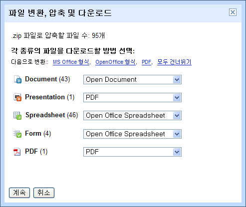

2009-11-01 14:33:35

구글 문서(Google Docs)의 여러 문서를 한번에 다운로드(MS Office 형식이나 Open Office 형식이나 pdf 로)할 수 있는 기능이 생겼습니다.
사실 온라인에 문서를 저장하면서, 갑자기 구글이 망하거나, 서비스가 사라진다면 어쩌지라는 생각을 할 때가 있었는데, 이제 정기적으로 백업을 하면 됩니다. 그리고 당연하다는 듯이 오픈오피스 형식으로(이상하게 아직 impress 로는 내보내기가 안되네요) 내려받기가 가능합니다.
위의 링크대로 '전체 문서' 를 선택한 후, 화면의 가장 아래까지 스크롤(속도를 위해 구글 문서를 처음 몇개만 보여주므로 전체 문서를 내려받기 하려면 모든 문서가 나타나도록 문서 목록의 가장 아래까지 직접 내려가야한다)한 후, 전체 체크를 해주고, 오른쪽 버튼을 눌러서 'Export' 를 해주면 됩니다.
이제 구글 문서에서 작업하는 게 좀더 '자유' 로와 지겠네요~
ps : 2010년 1월 현재 구글에서는 'Export all your files (up to 2 GB)' 라는 옵션을 통해서 그냥 쉽게 한번에 2GB 까지 export 가능하게 하는 옵션을 추가한 상태입니다.